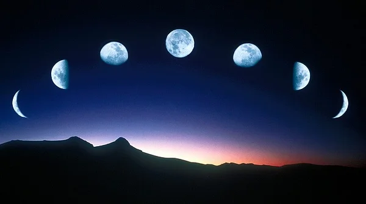

Las fases de la Luna
Según la dsposición de la Luna, la Tierra y el Sol, la cara visible de la luna se iluminada una mayor o menor porción.

Fases de la Luna
Luna nueva
Cuarto creciente
Luna llena
Cuarto menguante